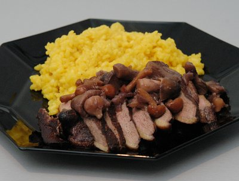

| Zutaten für 2 Personen: | |
| 2 | Entenbrüstchen |
| 2.5 dl | Blauburgunder Wein |
| 2 El | Rafzer Marc |
| 2 El | Schalotten |
| 1 | Lorbeerblatt |
| 1 | Nelke |
| 1 | frisches Rosmarinsträusschen |
| 150 g | Butter |
| Salz | |
| Pfeffer | |
| 1 dl | Wildbrühe |
| Kerbelblätter | |
Eine Marinade aus dem Wein, dem Loorbeerblatt, der Nelke und dem Rosmarinsträusschen zubereiten. Entenbrüstchen von anhängendem Fett und Sehnen befreien, jedoch die Haut mit der aufliegenden Fettschicht nicht entfernen. 24 Stunden in der Marinade beizen.
Brüstchen abtropfen und trocken tupfen. Mit Salz und Pfeffer würzen und in 50 g Butter von beiden Seiten so braten, dass sie innen rosa bleiben. Anschliessend warm halten und etwas ruhen lassen.
Schalotten weich dünsten und mit Rafzer Marc und Rotwein aus der Marinade ablöschen. Wildbrühe beigeben und das Ganze um die Hälfte einkochen. Topf vom Feuer nehmen und mit 100 g Butter aufschwingen, abschmecken und mit wenigen gehackten Kerbelblättern verfeinern.
Die in Scheiben geschnittenen Brüstchen mit Sauce umgeben und mit gebratenen Steinpilzen, Morcheln und Pfifferlingen in Blätterteigpastetchen und jungem Blattspinat garnieren.
Blauburgunder aus dem Limmattal oder aus dem Zürcher Unterland.
Broschüre Zürcher Wein und die Kultur dazu; Restaurant Kreuz, Rafz, Familie Hans Marti-Spirig
Eher aufwendig wenn man es genau nach Rezept macht. Nicht sehr logisch aufgebautes Rezept. Die Ente schmeckte anfänglich nach Leber wurde dann aber besser. Schlussendlich OK. RE, 2.4.2000
Mit diesem Blauburgunder/Pinot Noir kann ich nichts anfangen. Mit besserem Wein schmeckt die Ente dann vielleicht auch besser. Ich liess die Ente 48 Stunden beizen was etwas auf der langen Seite war. Dennoch hat das Gericht ausgezeichnet geschmeckt. Ich habe die Pilzmischung in die Sauce gegeben und es hat wunderbar gepasst. RE 3.4.2010
@LINKBACK_TAG@ @WAKELOCK@